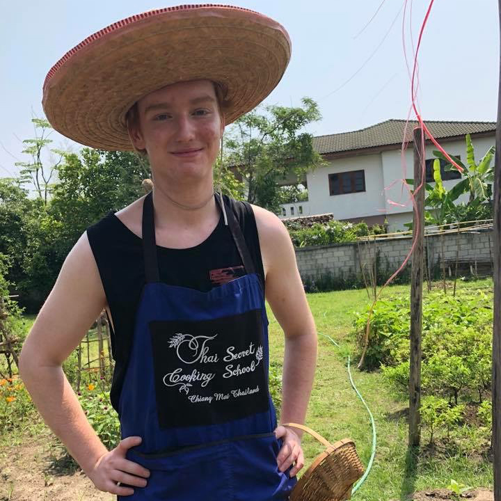

My Name Is Luke
I Help Businesses Grow Online...
About Me
My name is Luke, and in my spare time I enjoy being outdoors, playing sports, and travelling. You may also find me sitting by the pool being responsible and sipping on a nice cold Belgian Moon.
My Work
General Manager - Enviro painting
When I joined Enviro Painting, the company was doing a steady $5000,000 in revenue per year while operating at a 30% profit margin. We had lofty goals of becoming one of the few million dollar painting companies in the Ottawa area. I prioritized creating a predictable and replicatable formula for generating leads, which was the biggest hurdle for our growth. Outsourcing some web design from a company that had proven results was a tough decision due to the initial capital investment, but it proved to be the main catalyst for our growth. I also set up a team of door to door sales reps that helped us maximize our growth potential during the summer months. With these implementations, we hit $1,200,000 in sales the year that I joined. Not only that, but through implementing proper systems to streamline our work flow, productivity went up, and with it rose profit margins. Despite the new overhead costs of marketing, we were able to significantly increase our avereage job size, attract better workers, and thanks to our new systems, have everyone work more efficiently. Profit margins consequently rose to 35%.
Meta Marketers
My long-term goal is to help other small busienssses achieve similar growth to what I experienced
with Enviro Painting.
I want to do this by eliminating the largest obstacle to growth that small business owners have,
creating a strong online presence that
generates a predictable stream of new business. There are three main ways I will do this at Meta
Marketers, my future company. First, it starts with building a strong online presence and converting on the highest percentage
of vistors possible.
Next, it's important
to show your website to potential clients, and we do that through advertising.
Finally, it
is time to generate organic traffic, and in order to
do that, we need to focus on SEO. I plan to build a one stop shop marketing business
specifically for small businessses.
Skills
Marketing
Marketing is about creating a message that engaes an opportunity for your busiensses growth. Whether it's design or planning, I do both.

Adobe Suite
I am well versed in many products within the Adobe Suite.

Business
I see opportunity in every business, and have the knowledge to set up systems to facilitate growth.